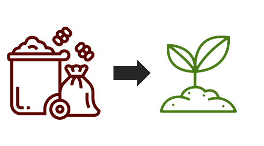

What Happens to Food Waste in NYC?
By Coralie Carlson
Oct. 6, 2023
Mayor Eric Adams signed the Zero Waste Act into law this summer which will, among other things, mandate residential composting across New York City by October 2024. Already Queens has begun mandatory curbside composting. So what happens to all the food scraps and yard waste? There are three main possibilities.
In Landfills, Food Waste Becomes Methane

As the law is phased in, most food waste still gets tossed in the trash and winds up in landfills. In New York City, organics make up 30% of waste that goes to landfills. When organics decompose, they create methane, a greenhouse gas that is significantly more dangerous than carbon dioxide. The methane produced by our organic waste in landfills alone represents nearly 4% of the city’s overall greenhouse gas emissions.
Source: DSNY and Open Data NYC
In Queens and Orange Bins, Compost Becomes Biogas
As the leafiest borough, Queens was the first to have mandatory composting of food scraps and lawn waste. Compost collected here and in orange bins around the city is brought to the Newton Creek wastewater treatment plant. After the plastic bags are removed, it goes into gigantic egg-shaped structures where the organics are digested, similar to how a stomach digests food. The result is biogas, which is fed back into the National Grid.
Source: NYC DEP
In Staten Island, Compost Becomes Dirt for Gardens
More traditional compost is made from the scraps in Staten Island at a composting facility at Fresh Kills. There, organic waste is separated from plastic bags, mulched, and left in rows for bacteria and bugs to do their work. The resulting dirt is bagged and branded as Big Apple Compost, which is given back to residents or sold.
Source: Sustainable Generation and NYC.gov